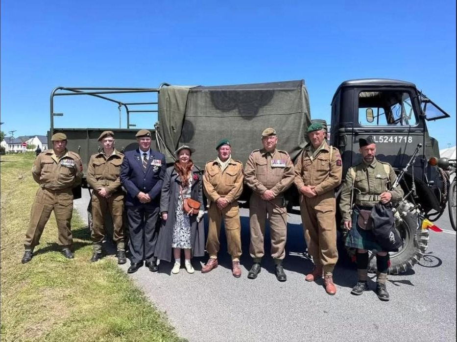
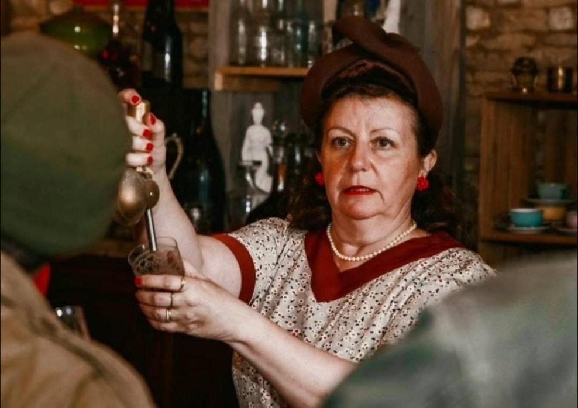

Association de reconstitution historique · Calvados
Pour que leur
Pour que leur
mémoire ne
s'efface jamais.
Normandy Soldiers Memory fait revivre le quotidien civil et militaire de la Seconde Guerre mondiale pour transmettre l'histoire de la Libération et honorer, dans un esprit résolument pacifique, toutes ses victimes.
▼ Défiler
UTAH06·06·44
OMAHA06·06·44
GOLD06·06·44
JUNO06·06·44
SWORD06·06·44
Bienvenue
Des passionnés d'histoire au service de la mémoire
Depuis 2020, nos bénévoles revêtent uniformes et tenues civiles d'époque pour recréer la vie des soldats alliés et des familles normandes pendant la bataille de Normandie. Camps reconstitués, véhicules d'époque, cérémonies du souvenir : nous allons à la rencontre du public pour que cette histoire reste vivante.


Explorer
Au cœur de 1944
Découvrez ce que nous faisons, d'où nous venons et revivez nos plus belles sorties en images.

Se souvenir de ceux qui sont tombés, civils comme militaires, c'est faire le choix de la paix.— L'esprit de Normandy Soldiers Memory
S'engager
Rejoignez le devoir de mémoire
Membre, donateur ou partenaire : chacun peut faire vivre la mémoire.